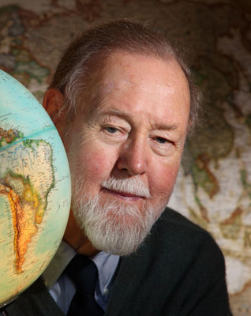

2 История развития геоинформационных систем
Геоинформатика (GIScience, Geographical Information Science, Geoinformatics) – наука, занимающаяся вопросами проектирования, создания, эксплуатации географических информационных систем (ГИС). Геоинформатика является одновременно научной дисциплиной и технологией.
ГИС - это информационная система, обеспечивающая сбор, хранение, обработку, отображение и распространение пространственных данных.
«все где-то происходит», а ГИС позволяет нам визуализировать взаимосвязь между «что» и «где». Понимая эту взаимосвязь «что» и «где», мы можем решать свои профессиональные задачи, принимать решения и даже спасать жизни.
Так как ранняя история ГИС тесно связана с картографией, нельзя не упомянуть тот факт, что карты создавались на протяжении всей истории человечества с ранних времен.

Одним из первых применений карт для того, чтобы ответить на вопрос “что и где происходит” можно назвать карту распространения холеры в Париже, подготовленную Шарлем Пике в 1834 году1

Наиболее известным же примером является карта эпидемиолога Джона Сноу, показывающая заболеваемость холерой в одном из районов Лондона.

Создание этой карты привело к научному прорыву как в области медицины и эпидемиологии, так и в области анализа данных (например, привело с созданию метода кластеризации).

Однако нельзя считать эту карту его заслугой2 . На самом деле Сноу предположил, что холера распространяется через питьевую воду в 1849 году, то есть за 5 лет до эпидемии, преобладающей гипотезой в то время была теория миазмов. На основе своей гипотезы во время эпидемии 1854 года он, подкрепив свои данные официальной статистикой, обнаружил общий источник, и в сентябре 1854 года ручка насоса была убрана. А сама знаменитая карта была сделана и показана на встрече Эпидемиологического общества только в декабре 1854 года.
Также отмечено, что он на самом деле не был первопроходцем тематического картографирования: подобные карты начали составлять примерно с конца 18 века и они были довольно распространены в 1830х годах.
.jpg)
Кроме того, Сноу сделал карту не сам, а она была подготовлена картографом Чарльзом Шеффинсом.
Карту Джона Сноу продолжают переосмыслять3 и обсуждать4 до сих пор.
Чуть позднее картографические методы стали использоваться в том числе и в социальных исследованиях. Первым таким масштабным исследованием были карты лондонской бедноты, подготовленные Чарльзом Бутом в рамках Исследования жизни и труда в Лондоне (1886-1903 гг.) (Inquiry into Life and Labour in London). Это исследование было одним из больших исследований жизни рабочего класса того времени.
По результатам работы Чарльза Бута был подготовлен целый ряд карт, на которых выделялось 7 классов домохозйств в зависимости от уровня доходов и условий жизни.


Оригинальная карта лондонской бедности была подготовлена вместе с отчетом в 1889 году, а 10 лет спустя пересмотрена и обновлена в виде 12 листов карт более крупных масштабов.
Подробнее почитать про это исследование и ознакомиться подробными оцифрованными версиями карт можно здесь.
Позже последовали аналогичные исследования в других странах, например, Hull House Maps and Papers5, подготовленные под руководством Флоренс Келли. В рамках этого исследования были созданы карты заработной платы для одного из районов Чикаго.

Также следует упомянуть важное для социологии исследование У. Э. Б. Дюбуа́ (W. E. B. Du Bois) - The Seventh Ward of Philadelphia. Distribution of Negro inhabitants throughout the Ward and their social conditions6.

Более подробно с историей применения картографии в социальных исследованиях можно познакомиться в книге Vaughan, L. 2018. Mapping Society: The Spatial Dimensions of Social Cartography. London, UCL Press. https://www.uclpress.co.uk/products/108702
К 1950-м годам карты начали использоваться для маршрутизации транспортных средств, планирования развития и определения местоположения достопримечательностей.
В период с 1960 по 1975 год три основных технологических достижения в области новых компьютерных технологий привели к рождению современных ГИС:
возможность вывода картографических изображений с помощью линейных принтеров; д
достижения в области хранения данных
увеличение вычислительной мощности мэйнфреймов.
Первые геоинформационные системы появились в 60-х годах прошлого века в Швеции и Канаде. Эти геоинформационные системы были узко специализированными и создавались для управления земельными ресурсами.
Роджер Томлинсон (17 ноября 1933 г. - 7 февраля 2014) - «отец ГИС», Канада, 1960-е, Канадская географическая информационная система (CGIS). Фактически он был первым человеком, придумавшим термин “геоинформационная система”.
CGIS была уникальна тем, что реализовала многоуровневый подход к работе с картой.

The early days of GIS were very lonely. No-one knew what it meant. My work has certainly been missionary work of the hardt kind
Бюро переписи населения США также одним из первых приняло основные принципы ГИС. Бюро приступило к оцифровке границ переписи, дорог и городских территорий.
Ordnance Survey в Великобритании приступило к разработке своих топографических карт. Они использовали компьютеры для упрощения процесса обновления будущих изданий карт, а в 1971 году цифровое картографирование было введено в крупномасштабное производство карт ОС.
Swedish land databank system (SLDS), начало 70-х годов.
1964 год, Говард Фишер (Howard Taylor Fisher), SYMAP (Synergetic mapping).

SYMAP была создана после ознакомления Фишера с цифровыми картами городского планирования, подготовленными группой Эдгара Хорвуда (Edgar Horwood). Фишерв Фонд Форда для того, чтобы продолжить работу над тематическим картографированием. В том числе на средства этого Фонда и была создана Гарвадская лаборатория компьютерной графики.
Следующий этап развития ГИС тесно связан с Говардом Фишером и основанной им в 1965 год Гарвардской лабораторией компьютерной графики и пространственного анализа (Harvard Laboratory for Computer Graphics and Spatial analysis).

В этой лаборатории и была создана первая векторная ГИС - Odyssey. Главной целью ее создания было спроектировать векторную ГИС, которая бы имела поддержку инструментов пространственного анализа.
Далее на основе Odyssey были созданы различные дополнения и расширения к основному функционалу.
В 1969 Джек Дэнджермонд (Jack Dangermond), сотрудник Гарвадской лаборатории компьютерной графики, и его жена Лаура основали Институт исследований экологических систем (Environmental Systems Research Institute), Inc. (Esri).
I had some notion of applying computer mapping to my profession
В настоящее время ESRI около 40% рынка7 геоинформационных систем.
В период с 1990 по 2010 год ГИС получили широкое распространение благодаря тому, что компьютеры становились дешевле, быстрее и мощнее, увеличивалось количество вариантов программного обеспечения ГИС, а оцифрованные картографические данные стали более доступны, а также благодаря тому, что были запущены новые спутники для наблюдений за Землей и появилась возможность использовать результаты дистанционного зондирования Земли в ГИС.
Современный нам этап развития геоинформационных систем можно охарактеризовать следующими тенденциями:
появление ГИС с открытым исходным кодом, в противовес коммерческим пропроетарным продуктам;
наличие общедоступной географической информации, в том числе благодаря краудсорсинговым проектам (OSM, Wikimapia);
проникновение ГИС в повседневную жизнь благодаря широкому распространению смартфонов и появлению приложений, использующих географическую информацию (навигационные приложения, сервисы доставки);
анализ больших данных;
использование методов ГИС в аналитике и программировании.
Charles Picquet Maps One of the First Applications of Spatial Analysis in Epidemology https://www.historyofinformation.com/detail.php?entryid=4237↩︎
Something in the water: the mythology of Snow’s map of cholera https://www.esri.com/arcgis-blog/products/arcgis-pro/mapping/something-in-the-water-the-mythology-of-snows-map-of-cholera/↩︎
https://ralucanicola.github.io/cholera-map-3D/
https://carto.maps.arcgis.com/apps/webappviewer3d/index.html?id=6292fde2362e44679d6359fb6d2bbefe↩︎
Essential, Illustrative, or … Just Propaganda? Rethinking John Snow’s Broad Street Map Tom Koch and Ken Denike. Cartographica: The International Journal for Geographic Information and Geovisualization 2010 45:1, 19-31 https://doi.org/10.3138/carto.45.1.19↩︎
https://florencekelley.northwestern.edu/historical/hullhouse/↩︎
Forbes profile. Jack Dangermond https://www.forbes.com/profile/jack-dangermond/?sh=726658156c6e↩︎